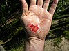

laceration

Has synonym(s): laceration
Definition: A wound is any disruption of or damage to living tissue, such as skin, mucous membranes, or organs. Wounds can either be the sudden result of direct trauma (mechanical, thermal, chemical), or can develop slowly over time due to underlying disease processes such as diabetes mellitus, venous/arterial insufficiency, or immunologic disease. Wounds can vary greatly in their appearance depending on wound location, injury mechanism, depth of injury, timing of onset (acute vs chronic), and wound sterility, among other factors. Treatment strategies for wounds will vary based on the classification of the wound, therefore it is essential that wounds be thoroughly evaluated by a healthcare professional for proper management. In normal physiology, all wounds will undergo a series of steps collectively known as the wound healing process, which include hemostasis, inflammation, proliferation, and tissue remodeling. Age, tissue oxygenation, stress, underlying medical conditions, and certain medications are just a few of the many factors known to affect the rate of wound healing.
Source: Wikipedia
Wikipedia Page (Something wrong with this association? Let us know.)
Wikidata Page (Something wrong with this association? Let us know.)